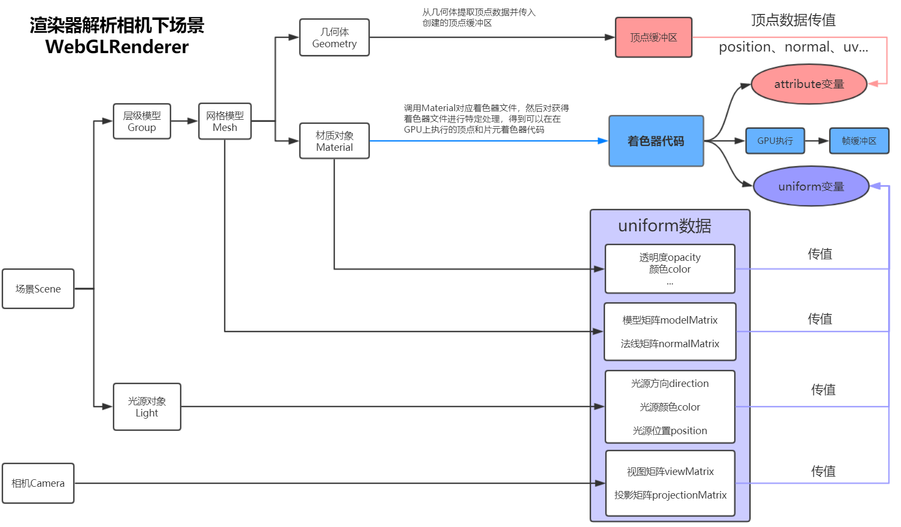
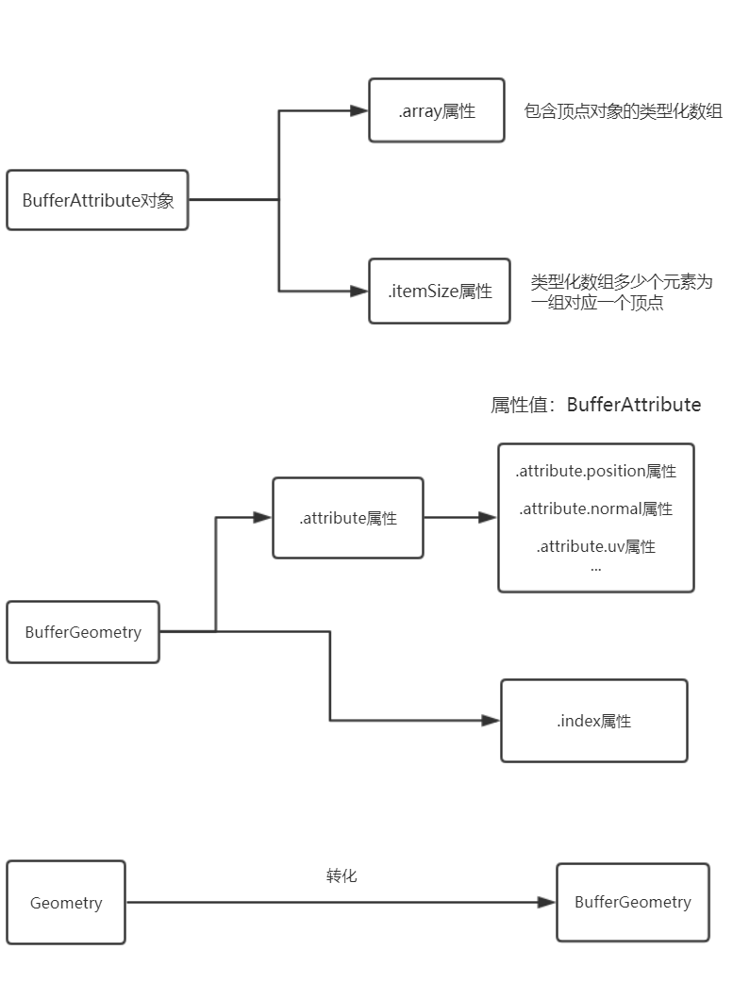
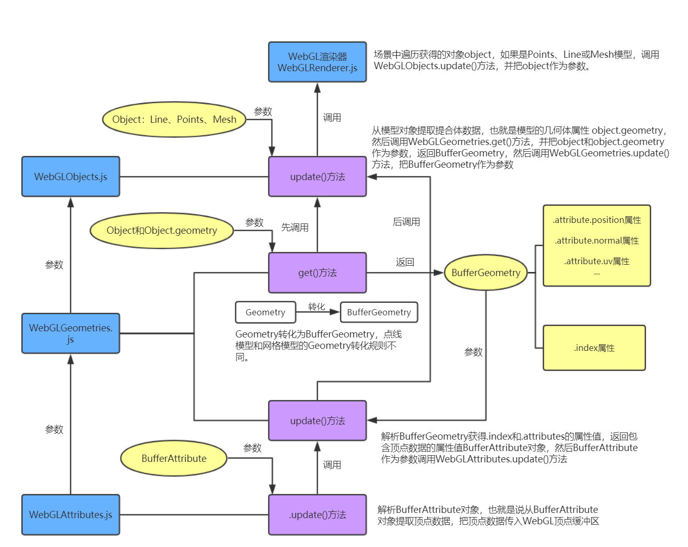

上节课讲解了如何把WebGL的顶点数据封装为Three.js的几何体对象，这节课就来讲解Three.js的渲染器在渲染的时候，如何解析几何体对象，提取顶点数据，然后调用WebGL API创建顶点缓冲区，并把创提取的顶点数据传入创建的顶点缓冲区。
本章节的内容是给大家讲解Three.js渲染器是如何解析场景和渲染器对象的，本节课讲解解析的一个环节，也就是Threejs如何解析几何体并创建相应的顶点缓冲区。

原生WebGL通过gl.createBuffer()创建一个顶点缓冲区对象，用来存储顶点位置、顶点颜色、顶点法向量等数据。如果你理解了这一段代码，自然就很容易理解Three.js的几何体对象和相应的缓冲区。
// 顶点位置数据
var data=new Float32Array([0.5,0.5,0.3...]);
// 创建缓冲区buffer，传入顶点位置数据data
var buffer=gl.createBuffer();
gl.bindBuffer(gl.ARRAY_BUFFER,buffer);
gl.bufferData(gl.ARRAY_BUFFER,data,gl.STATIC_DRAW);
gl.vertexAttribPointer(aposLocation,3,gl.FLOAT,false,0,0);
Three.js渲染器解析几何体对象，会从几何体对象提取顶点数据传入WebGL顶点缓冲区的时候，如果解析的是BufferGeometry对象，直接访问.attributes属性提取顶点数据就可以，比如获得顶点位置数据，通过.attributes.position.array获得顶点数据。如果Three.js渲染器解析的几何体是Geometry对象，会先把Geometry对象转化为BufferGeometry对象然后再解析。

Geometry.colors点模型Points、线模型Line对象与网格模型Mesh对象的几何体结构Geometry略有不同。
Geometry.colors属性包含的顶点颜色数据在点模型Points、线模型Line中使用，几何体对象的该属性在网格模型Mesh中不起作用。 网格模型Mesh使用几何体对象三角面Face3的顶点颜色属性Face3.vertexColors设置颜色。
Geometry转化为BufferGeometry通过BufferGeometry.setFromObject(object)方法可以把参数可以把object模型对象的几何体geometry转化为BufferGeometry，点模型Points和线模型Line使用一套解析转化规则，网格模型Mesh使用一种转化规则。
对于网格模型的几何体Geometry转化为BufferGeometry的时候，需要先把Geometry对象转化为直接几何体对象DirectGeometry，然后再转化为BufferGeometry对象。
WebGLAttributes.js、WebGLGeometries.js和WebGLObjects.js是工厂函数，执行这三个函数都会返回一个具有特定方法的对象，WebGLObjects.js会调用WebGLGeometries对象的方法，WebGLGeometries.js会调用WebGLAttributes对象的方法。

.update(BufferAttribute)方法
解析BufferAttribute对象，也就是说从BufferAttribute对象的.array属性提取顶点数据，把顶点数据传入WebGL顶点缓冲区，对gl.createBuffer()、gl.、bufferData()等WebGL API进行了封装。
.get()方法
参数:.get(Object,Object.geometry)
如果Object.geometry是BufferGeometry直接返回，如果是Geometry，会转化为BufferGeometry，点线模型和网格模型的Geometry转化规则不同，所以参数需要传入Object，代码需要判断Object是Points和Line还是Mesh。
.update(BufferGeometry)方法
通过BufferGeometry的.index和.attributes属性，获得包含顶点数据的BufferAttribute对象，然后BufferAttribute作为参数调用WebGLAttributes.update()方法，提取顶点数据并传入顶点缓冲区。
.update(Object)方法
从模型对象Object提取几何体数据，也就是模型的几何体属性 Object.geometry，然后调用WebGLGeometries.get()方法，并把Object和Object.geometry作为参数，直接get方法后返回BufferGeometry，然后调用WebGLGeometries.update()方法，把BufferGeometry作为参数。
场景中遍历获得的对象object，如果是Points、Line或Mesh模型，调用WebGLObjects.update()方法，并把object作为参数。
import {WebGLAttributes} from './webgl/WebGLAttributes.js';
import {WebGLGeometries} from './webgl/WebGLGeometries.js';
import {WebGLObjects} from './webgl/WebGLObjects.js';
var attributes, geometries, objects;
attributes = new WebGLAttributes(_gl);
// WebGLAttributes作为WebGLGeometries参数
geometries = new WebGLGeometries(_gl, attributes, info);
// WebGLGeometries作为WebGLObjects参数
objects = new WebGLObjects(geometries, info);
function projectObject(object, camera, sortObjects) {
...
else if (object.isMesh || object.isLine || object.isPoints) {
var geometry = objects.update(object);
}
...
// 递归算法：遍历对象
var children = object.children;
for (var i = 0, l = children.length; i < l; i++) {
projectObject(children[i], camera, sortObjects);
}
}
// 渲染方法中调用projectObject
this.render = function(scene, camera, renderTarget, forceClear) {
...
// 递归遍历场景对象，对于其中的点、线和网格模型需要解析它们的几何体，提取顶点数据，并传入顶点缓冲区
projectObject(scene, camera, _this.sortObjects);
...
}